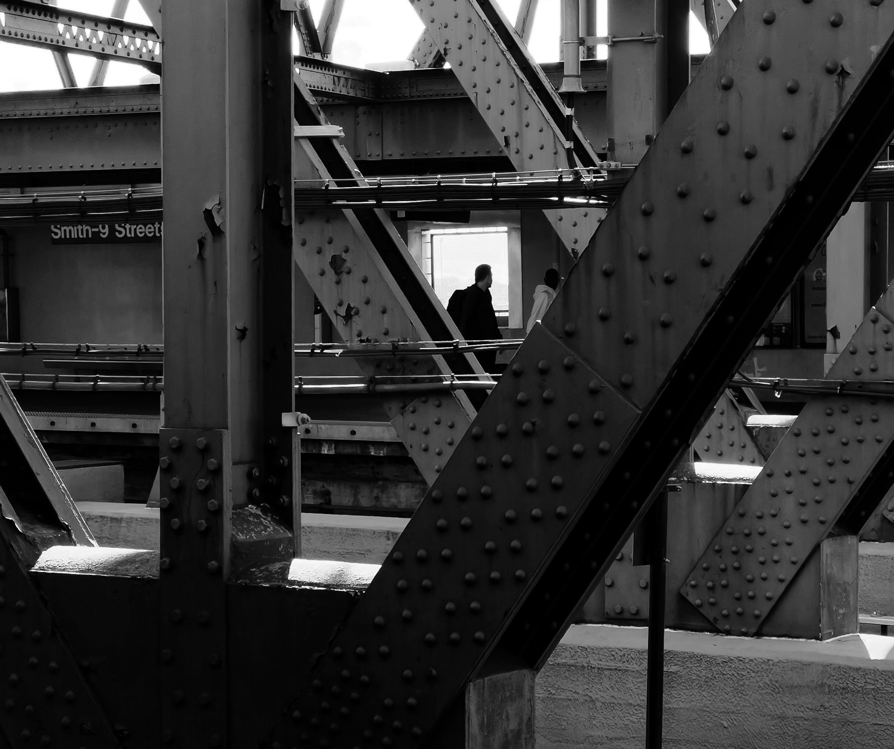
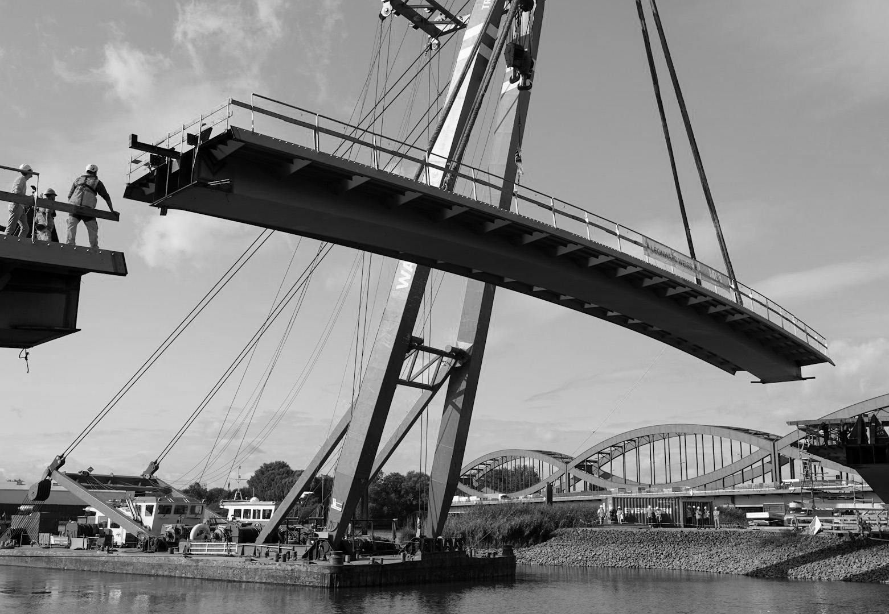

Infrastructure
Riverside Bridge
Location
Portland, OR
Scope
Infrastructure
Timeline
14 months
Role
Lead Engineer
The Challenge
The existing river crossing was rated structurally deficient and couldn't support modern freight loads. SPAN was brought in to design a replacement without disrupting the surrounding wetland ecosystem.
Our Approach
A steel-truss arch design distributed load across fewer support points, minimizing riverbed disruption during construction.
Supporting Images


Outcome
40%
More Capacity
$2.2m
Budget / Value
0
Wetland Impact